A look at the presses, plate setters, coaters and finishing equipment we use every day. Each machine on this page is on our floor in Lehertara, Varanasi.
The Speedmaster SM 74 four-colour model is the ideal press for print shops with a professional approach to satisfying growing customer requirements or a desire to grow in a changed market environment. It offers reliability in production and investment security by delivering high print quality, reliability, and value retention.
The Speedmaster SM 74 processes a wide range of substrates — from lightweight paper to board. It also benefits from extremely user-friendly and ergonomic operation. The Prinect Press Center Compact with its innovative Intellistart process-oriented operator guidance system enables straightforward and precise machine control. The feeder with suction tape, which is unique in its class, optimises sheet transport. Automation components such as AutoPlate or automatic, programmable washup devices minimise makeready times. The Prinect Easy Control colour measuring system, fully integrated into the machine control station, reduces paper waste levels. And the delivery — either a compact standard unit or a convenient high-pile model — ensures perfect stacking for rapid finishing.
The high energy and resource efficiency of the Speedmaster SM 74 make it the most environmentally friendly press in its class. Star System peripherals perfectly coordinated with the press benefit from highly efficient operation and conserve resources.
| Printing stock | |
|---|---|
| Max. sheet size | 530 mm × 740 mm (20.87" × 29.13") |
| Min. sheet size | 210 mm × 280 mm (8.27" × 11.02") |
| Max. print format | 510 mm × 740 mm (20.08" × 29.13") |
| Thickness | 0.03 mm – 0.60 mm (0.0012" – 0.0236") |
| Gripper margin | 8 mm – 10 mm (0.32" – 0.39") |
| Printing output | |
|---|---|
| Maximum | 15,000 sph |
| Plates | |
|---|---|
| Length × width | 605 mm × 745 mm (23.82" × 29.33") |
| Thickness | 0.25 mm – 0.30 mm (0.0098" – 0.0118") |
| Blanket cylinder | |
|---|---|
| Length × width, blanket | 627 mm × 772 mm (24.69" × 30.39") metal-barred |
| Blanket thickness | 1.95 mm (0.0768") |
| Length × width, packing sheet | 550 mm × 750 mm (21.65" × 29.53") |
| Cylinder undercut | 2.30 mm (0.0906") |
| Pile heights | |
|---|---|
| Feeder | 1,060 mm (41.73"); incl. pile carriage or pile support plate and pile table |
| Standard delivery | 597 mm (23.50") standard; 1,160 mm (45.67") high-pile (incl. carriage) |
| High-pile delivery | 597 mm (23.50") standard / 1,160 mm (45.67") high-pile |
| Sample configuration | |
|---|---|
| Basis | Speedmaster SM 74-4 |
| Number of printing units | 4 |
| Length | 5.69 m (224.02") |
| Width | 3.07 m (120.87") |
| Height | 1.93 m (75.98") |
| Sample configuration 2 | |
|---|---|
| Basis | Speedmaster SM 74-4 with high-pile delivery |
| Number of printing units | 4 |
| Length | 7.93 m (312.20") |
| Width | 2.90 m (114.17") |
| Height | 1.93 m (75.98") |


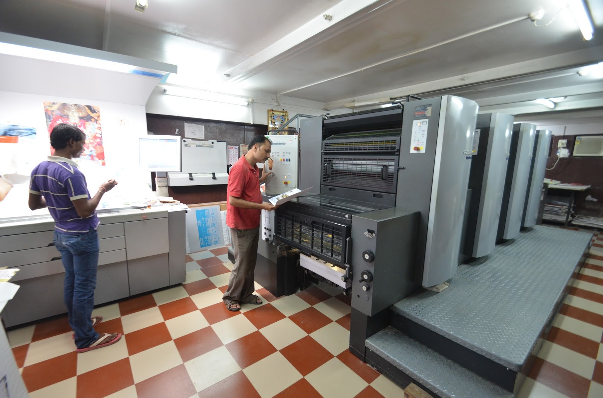
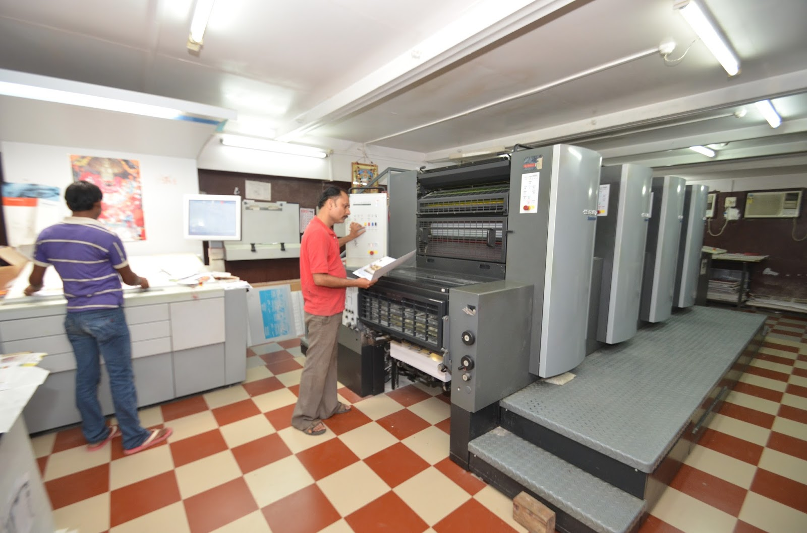
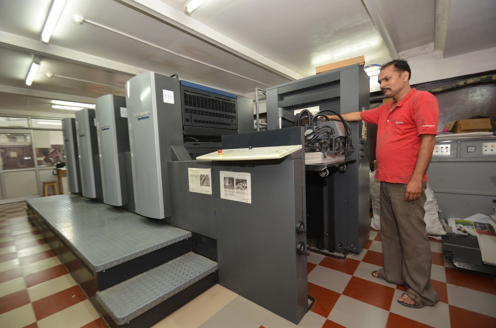
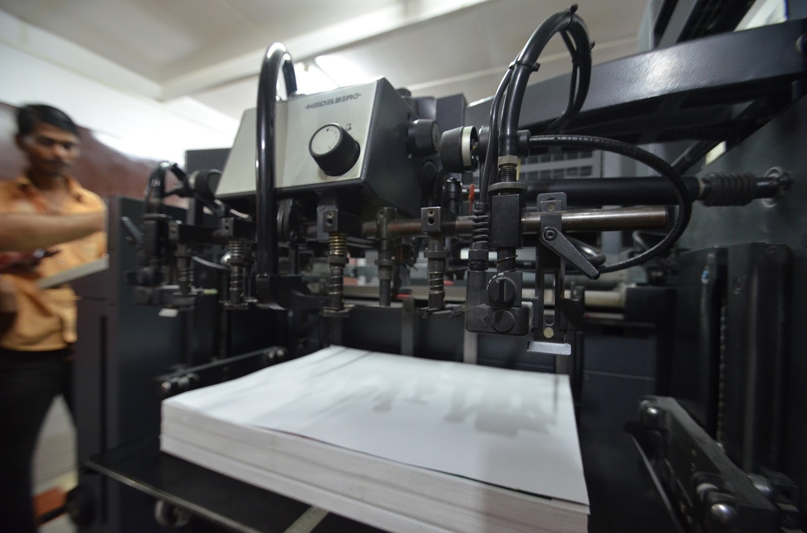
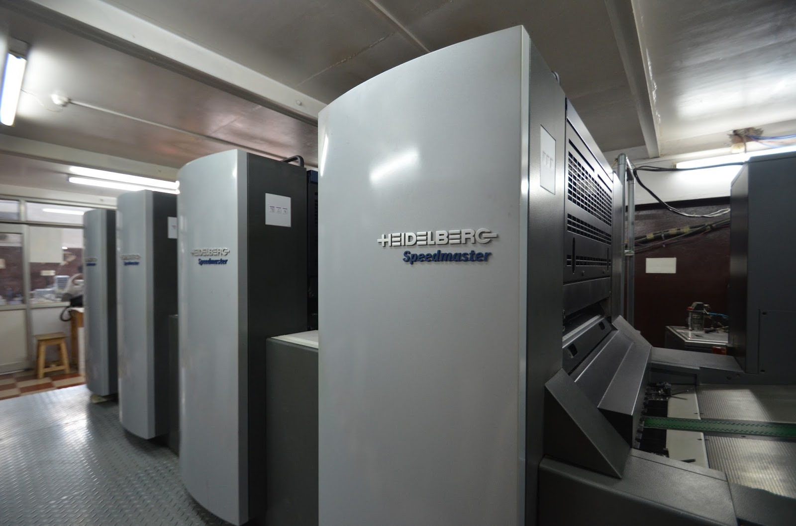
The Heidelberg Speedmaster SM 74-5+L is a five-colour press, produced in Germany by Heidelberg. The high energy and resource efficiency of the Speedmaster SM 74 make it the most environmentally friendly press in its class. Star System peripherals perfectly coordinated with the press benefit from highly efficient operation and conserve resources.
| Type | Offset press |
| Manufacturer | Heidelberg |
| Model | Speedmaster SM 74-5+L |
| Colours | 5 |
| Paper format max | 52 × 74 cm |
| Print format max | 51 × 74 cm |
| Press speed max | 15,000 sheets/hour |
| Length | 8640 mm |
| Width | 2760 mm |
| Height | 1860 mm |
| Year of production | 2002 |
| Machine no. | 626525 |
| Country | Germany |


VioStar is India's first and the world's third violet photopolymer digital plate for high-quality newspaper and commercial printing.
It is manufactured by Technova in technical collaboration with Agfa Gevaert. VioStar is designed to achieve print quality equalling that of a thermal plate, combined with the high speed, long run-length and ease-of-use of violet technology.
| Plate type | Negative-working high-speed violet laser plate |
| Coating | Photopolymer |
| Substrate | Electro-chemically grained and anodised |
| Gauge | 0.15 mm, 0.20 mm, 0.28 mm — other thicknesses on request |
| Spectral sensitivity | 405 nm violet diode |
| Gripper margin setting | 8 – 14 mm |
| Safe light | Yellow |
| Exposure | Stouffer 21-step wedge: 3 solid + 6 clear · UGRA wedge: 2 solid + 5 clear |
| Image colour | Blue |
| Processing steps | Pre-heat, pre-wash & wet processing with recommended developer |
| Run-length | Up to 400,000 impressions (unbaked) — can be baked for increased run-length · Up to 150,000 impressions (unbaked) with UV inks, under optimum printing conditions |


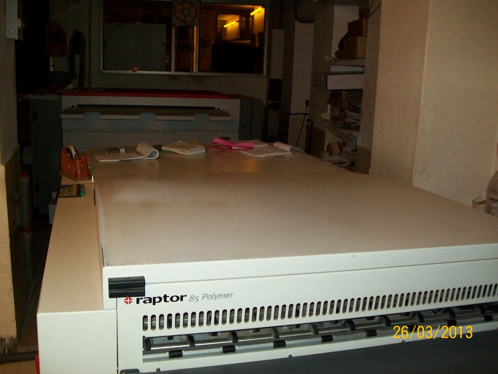
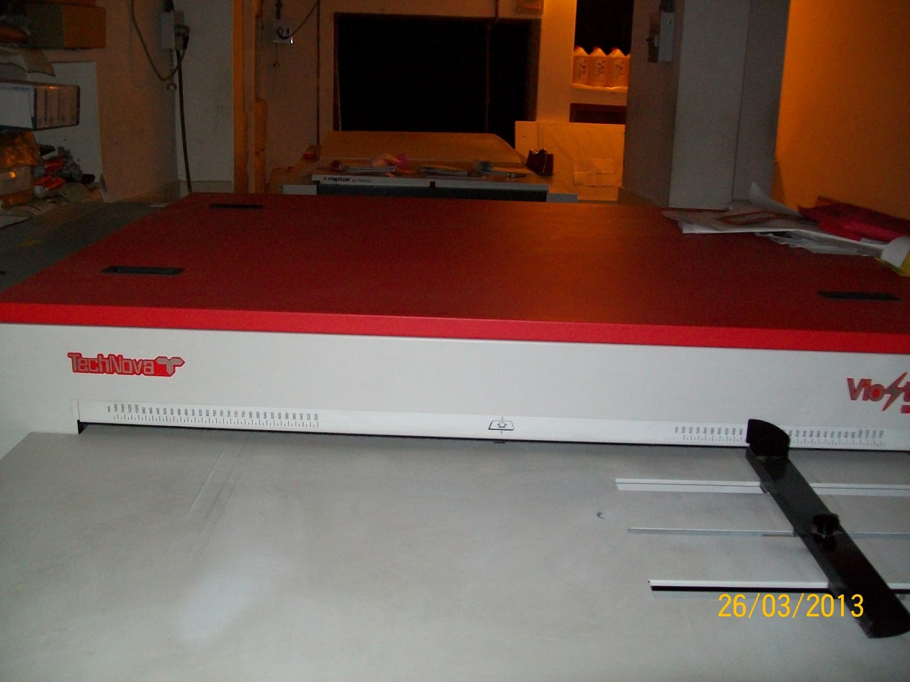
Autoprint Fine Coat 80 is an offline sheetfed flexo rotary automatic UV and aqueous coater with UV and IR dryer. It can perform full or flood coating, spot coating and spot-not window coating of both UV-based and water-based (aqueous) coatings. It is equipped with a 3-roller coating system including a chrome-plated anilox roller and doctor blade similar to a chamber doctor for better control of UV varnish solution. It works on letterpress dry offset principle with a 2-cylinder system. The first cylinder is plate-cum-blanket; the blanket can be used for full or flood coating, while a flexo or photopolymer plate is used for spot coating. Spot-not window coating is achieved using stripped blankets wherever coating is not required — mainly used by pharma carton manufacturers to avoid coating on coding and pasting areas.
It is a brand-new dedicated coater with specially designed grippers and stainless steel coater unit and other parts to withstand the highly corrosive UV varnish solution. It handles a minimum of 60 gsm chromo art mirror-coated labels and paper up to 450 gsm board of size up to 22" × 32", at a maximum speed of 5,000 sheets per hour. Ideal for large packaging printers and for starting a job-work unit for UV coating, aqueous coating, spot coating and post-press process work serving a cluster of printers.
Beyond packaging, UV coating is increasingly popular among publishing houses, where it is slowly replacing lamination for book-cover pages — UV coating matches the production speed of offset presses, whereas lamination is comparatively slow. Creasing issues on book-cover pages are eliminated by using creasable varnishes and the appropriate creasing tool in the perfect binding unit.
| Model | Autoprint Fine Coat 80 (UV & Aqueous Coating) |
|---|---|
| Maximum paper size | 560 × 800 mm (22" × 32") |
| Minimum paper size | 254 × 304 mm (10" × 12") |
| Maximum coating size | 550 × 800 mm |
| Paper thickness | 60 – 450 gsm |
| Coating speed | 2,000 to 5,000 sph |
| Feeding system | Stream feeder |
| Blanket size | 645 × 825 × 1.65 mm |
| Plate size | 645 × 825 × 0.3 mm |
| Polymer plate thickness (for spot coating) | 1.7 mm |
| Gripper margin on plate | 40 mm |
| Gripper margin on paper | 10 mm |
| Gripper bite | 5 mm |
| Circumferential image micro adjustment | 30 mm offline |
| Registration accuracy | ± 0.5 mm |
| Pull lay line adjustment | ± 1.5 mm |
| Delivery system | Chain delivery |
| Varnish unit | 3-roller system |
| Coating thickness | 3 – 5 gsm (adjustable) |
| Lubrication system | Centralised lubrication system |
| Power consumption | 4.5 kW |
| Main drive motor | 1.5 kW (2 hp) |
| Compressor motor | 1.5 kW (2 hp) |
| Pile up/down motor | 0.75 kW (1 hp) |
| Varnish motor | 0.374 kW (0.5 hp) |
| Varnish pump | 230 V, 50 Hz, single-phase AC |
| Impression on/off | Pneumatically operated |
| Dimensions (L × W × H) | 6750 × 2140 × 1680 mm (machine with dryer) |


Polar N 92 high-speed cutters are employed for cutting semi-finished and finished half-size products made of paper, cardstock, paperboard, plastic foils and similar materials.
In the graphics industry, high-speed cutters are also designated guillotine-type cutters, paper cutters or simply cutters.
Even the standard equipment of this cutter model includes a wide range of features which allow production to be increased by up to 20%.
Formats with diagonals up to 920 mm can be conveniently turned on the high-speed cutter itself. For larger sizes, the material can be turned on the front table.
| Cutting width | 920 mm |
| Feed depth | 920 mm |
| Clamp opening max. | 130 mm |
| Depth of front table | 690 mm |
| Dimensions (width × depth) | D 2030 mm × W 1770 mm |
| Max. substrate thickness | 5 – 7 mm (depends on mesh tension) |
| Designed for | Half-size formats (SRA3 up to 52 × 74 cm) |

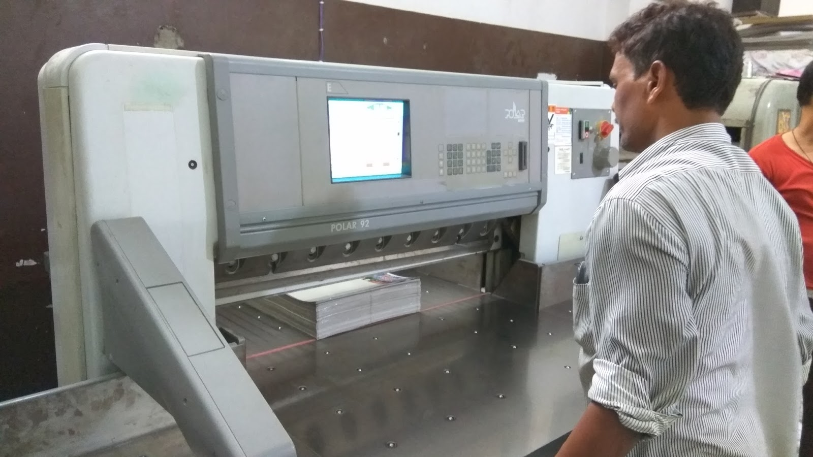
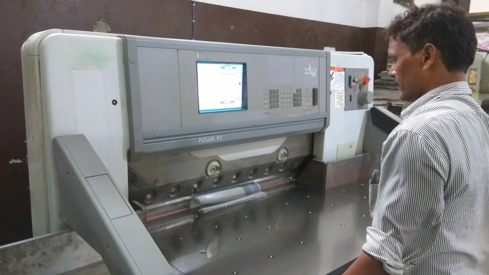
The 25" × 35.5" Maxima EXB 35 automatic die-cutting machine is targeted at mid-sized and large-sized packaging firms. It includes features that assist smooth operation, self-diagnosis for faulty set-ups, plus various safety measures.
The machine is equipped with an optional zero-gripper system, useful for producing large-size cartons — especially for textile packaging. It helps reduce wastage caused by gripper allowances and makes the printer more productive.
| Maximum sheet size | 905 mm × 635 mm (35.63" × 25") |
| Minimum sheet size | 355 mm × 305 mm (14" × 12") |
| Maximum cutting size | 895 mm × 620 mm (35.23" × 24.40") |
| Paper thickness | 0.1 mm to 1.5 mm |
| Maximum cutting pressure | 180 ton |
| Gripper margin setting | 8 – 14 mm |
| Maximum cutting speed | 5,000 sheets/hour |
| Total power | 705 kW |
| Size of machine | L 3.9 m × W 3.2 m × H 1.9 m |
| Total weight | ~8 ton |

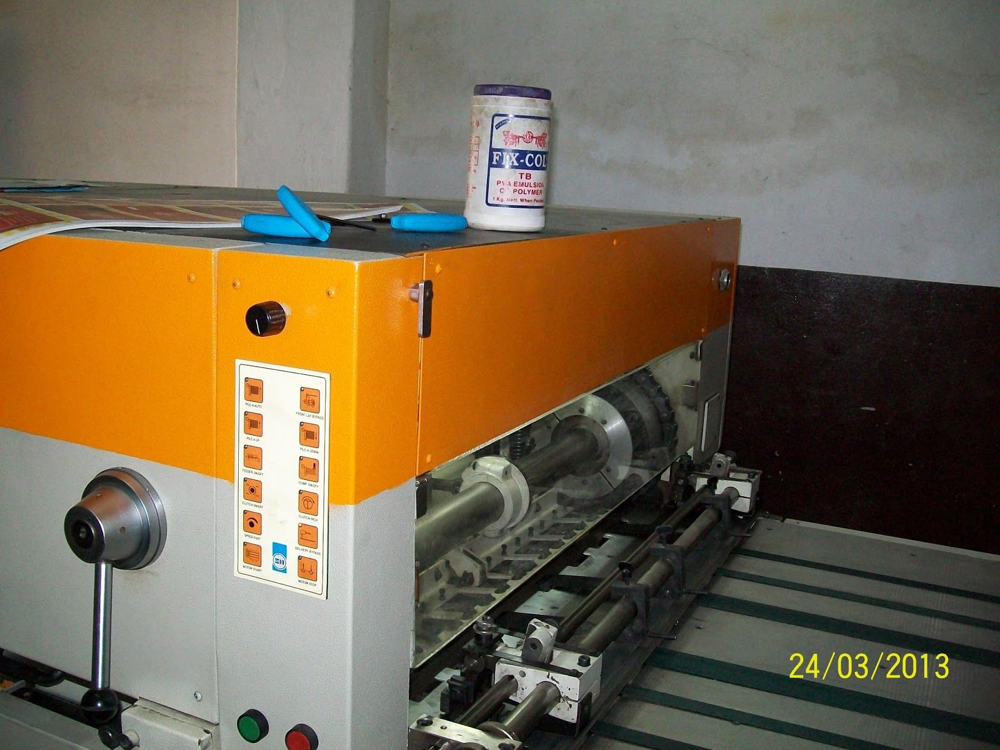
Boxtech BT-series high-speed automatic carton folder and gluer is suitable for folding and gluing small-format mono cartons with accurate folding and gluing technology, high productivity and quick make-ready.
The basic formation of pasting boxes is paper feeding: an automatic friction feeder enables continuous paper feeding, followed by one-side pasting. Folding method — first and third crease folding line up to 180° and opened, passing through the gluing section; second and fourth crease folding line at 180° in straight-line boxes. Boxes then enter a pressure delivery section for pressing and are stacked, ready for packing.
| Maximum line speed | 250 m/min |
| Applicable paper | 280 – 450 g/m² cardboard |
| Basic formation of pasting box | One-side pasting |
| Folding method | One-two-three folding line 90°, two-four folding line 180° in straight-line boxes |
| Method of paper feeding | Automatic and continuous friction feeding |
| Applied adhesive | Solute-type water-based glue |
| Power needed | 3.7 kW · 400 V |
| Weight | 3,000 kg |

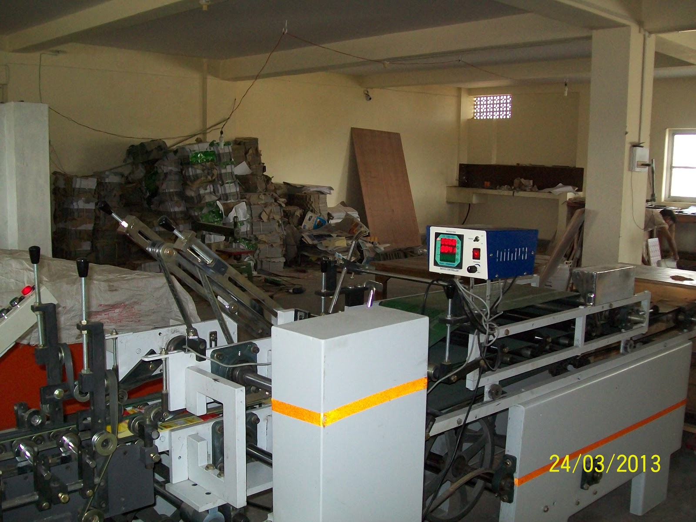
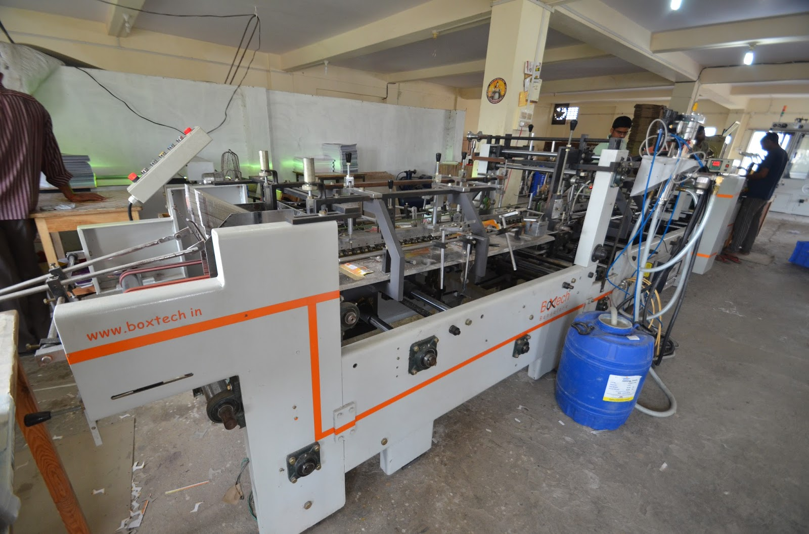
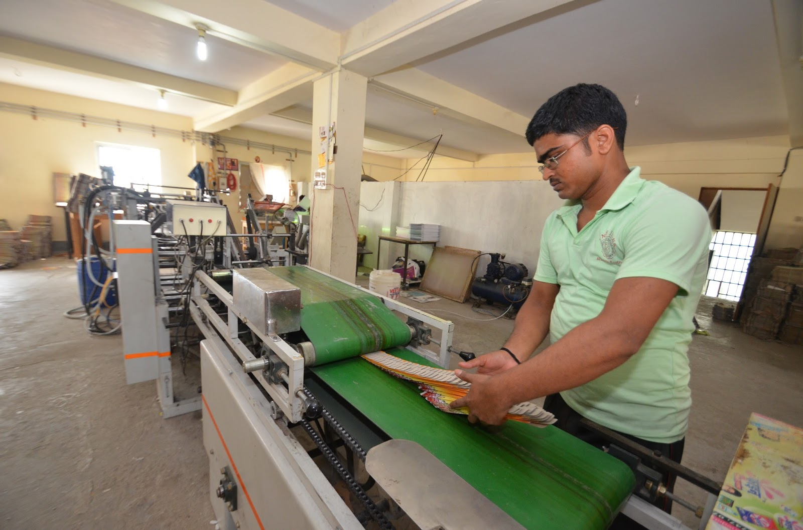
Nano-Print is a semi-automatic screen-printing machine for every common printer across the globe.
| Description | Model: GF-1520 Nano-Print |
|---|---|
| Max print area | 15" × 20" (381 × 508 mm) |
| Vacuum bed | 22.8" × 27.8" (580 × 707 mm) |
| Vacuum bed movement for registration | ± 7 mm |
| Screen frame size | 26" × 30" (660 × 762 mm) min · 30" × 36" (762 × 914 mm) max |
| Max off-contact | 10 mm |
| Max substrate thickness | 5 – 7 mm (depends on mesh tension) |
| Screen frame thickness | 1.0" – 1.5" |
| Squeegee holder | 16" (406 mm) min · 22" (560 mm) max |
| Flood coater | 20" (508 mm) min · 30" (762 mm) max |
| Max non-stop speed | 900 impressions per hour |
| Power consumption | 220 V AC, single phase, 6 A, 50 Hz · 1 hp (0.745 kW) |
| Dimensions (L × W × H) | 41" × 40" × 44" (1054 × 1005 × 1130 mm) |
| Weight | 270 kg |
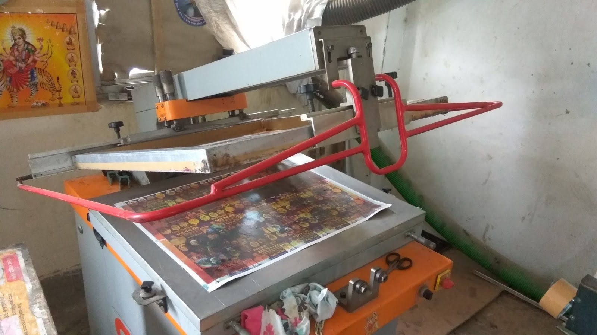
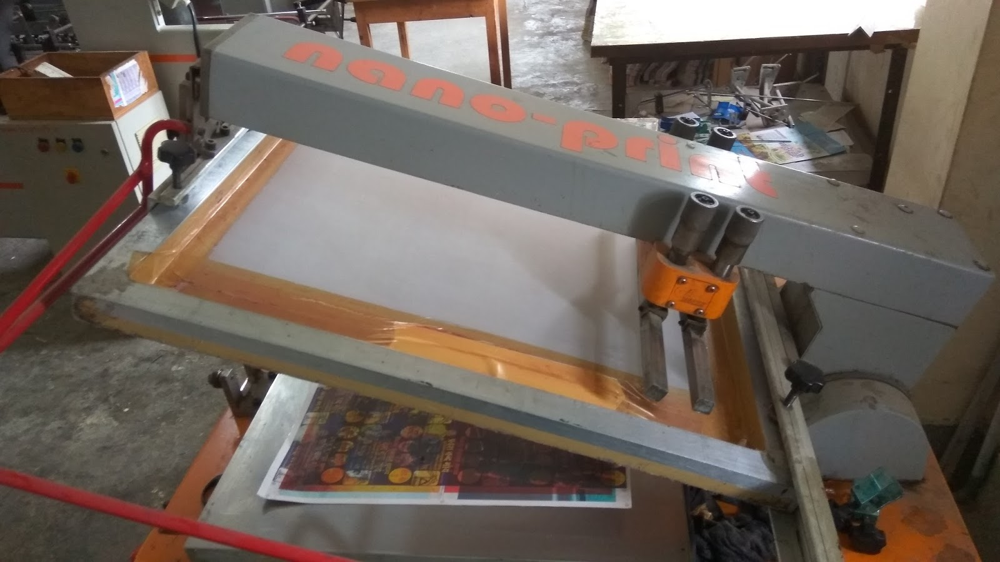
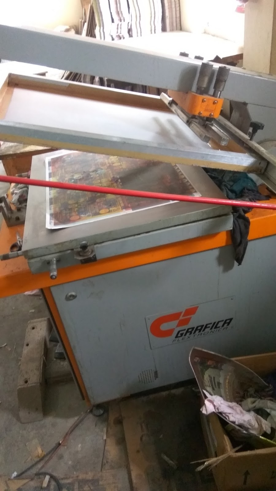
Want to see something printed on one of these? Send us a brief or call +91 9919995500.
All Services Get in Touch